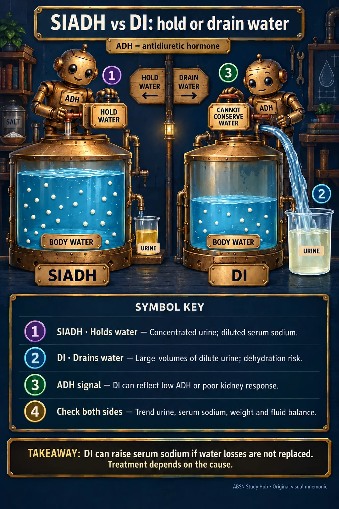

NUR 258 · MODULE 5
SIADH vs DI: hold or drain water
Look at the objects. Name what each represents. Then try the recall question.


📖 Read the symbol key
- SIADH · Holds water
Concentrated urine; diluted serum sodium.
- DI · Drains water
Large volumes of dilute urine; dehydration risk.
- ADH signal
DI can reflect low ADH or poor kidney response.
- Check both sides
Trend urine, serum sodium, weight and fluid balance.
One thing to keep
DI can raise serum sodium if water losses are not replaced. Treatment depends on the cause.
📘 What your course uses
Your course answer: in DI the serum sodium is HIGH — hypernatremia (dilute urine, concentrated blood). That is what ATI, your Maternal-Child text, the NUR 258 endocrine slides and the NUR 235 endocrine lecture all say, so use it on the exam.
🧠 Try it from memory
Which disorder can produce lots of dilute urine despite dehydration?
Reveal the answer
Diabetes insipidus. Desmopressin treats central DI; nephrogenic DI needs a different cause-directed plan.
Course connection and sources
NUR 258 · Module 5 — find “SIADH”.
Opposing water-balance scenes explain urine and serum trends in one view.
Live course page reviewed 11 October 2026. Mnemonics condense the concept; continue to use the full assigned text, clinical orders and course-specific conventions. Pictures use metaphors and are not diagnostic images.